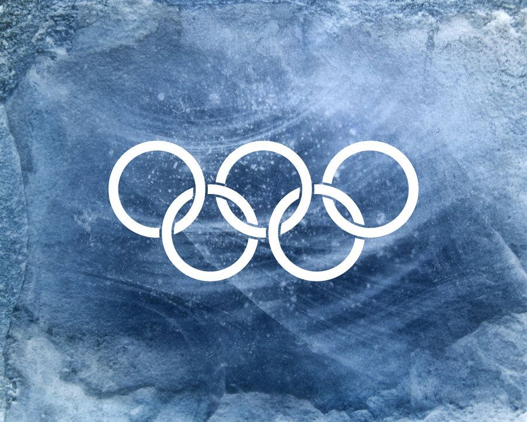

DESDE 1924
História
Conheça a história dos Jogos Olímpicos de Inverno.

O COMEÇO
Primeira edição
A primeira edição oficial das Olimpíadas de Inverno aconteceu em 1924, na cidade de Chamonix, na França, entre os dias 25 de janeiro e 5 de fevereiro. Na época, o evento foi chamado de Semana Internacional de Esportes de Inverno, mas posteriormente foi reconhecido pelo Comitê Olímpico Internacional como a primeira edição dos Jogos Olímpicos de Inverno. Participaram cerca de 260 atletas de 16 países, que competiram em esportes como esqui, patinação, hóquei no gelo, bobsled e curling. A Noruega foi um dos países que mais se destacou na competição.
Com o passar dos anos, novos esportes foram adicionados e os Jogos ficaram cada vez maiores.
Primeiros Jogos
Os primeiros Jogos Olímpicos de Inverno aconteceram em 1924, na cidade de Chamonix, na França. Participaram cerca de 260 atletas de 16 países, competindo em diferentes esportes praticados na neve e no gelo. O evento foi inicialmente chamado de Semana Internacional de Esportes de Inverno e, posteriormente, foi reconhecido como a primeira edição oficial das Olimpíadas de Inverno. Essa competição marcou o início da história dos Jogos Olímpicos de Inverno.
Jogos na Itália
Os Jogos Olímpicos de Inverno de 2026 aconteceram na Itália, tendo como principais cidades-sede Milão e Cortina d’Ampezzo. O evento reuniu atletas de diversos países para competir em esportes de neve e gelo. Essa edição foi importante por marcar o retorno dos Jogos Olímpicos de Inverno à Itália, depois da edição de Turim, em 2006.
Intervalo
Os Jogos Olímpicos de Inverno são realizados, normalmente, a cada quatro anos. Esse intervalo permite que os atletas se preparem e que o país-sede organize toda a estrutura necessária para receber as competições.